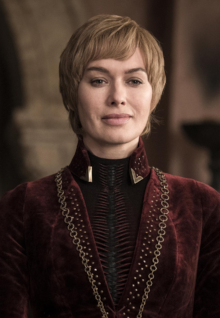
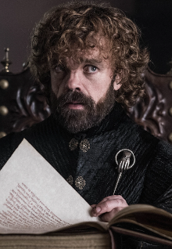

Members of House Lannister

Tywin Lannister
Lord Tywin Lannister was the head of House Lannister, Lord of Casterly Rock, Warden of the West, Lord Paramount of the Westerlands, Hand of the King for three different kings, and Protector of the Realm. He was the father of Cersei, Jaime, and Tyrion Lannister, and sole grandfather of the incest-born Joffrey, Myrcella, and Tommen Baratheon.
"Before long I'll be dead, and you and your brother and your sister and all of her children, all of us dead, all of us rotting in the ground. It's the family name that lives on. It's all that lives on. Not your personal glory, not your honor... but family."

Cersei Lannister
Queen Cersei I Lannister was the twentieth ruler of the Seven Kingdoms and the widow of King Robert Baratheon. She was the daughter of Lord Tywin Lannister, twin sister of Jaime Lannister and elder sister of Tyrion Lannister. She was involved in an incestuous relationship with Jaime, who was secretly the father of her three bastard children, Joffrey, Myrcella and Tommen. After all her children died, Cersei assumed the throne under the name of Cersei of the House Lannister, the First of Her Name, Queen of the Andals and the First Men, Protector of the Seven Kingdoms, making her the first officially recognized Queen Regnant in the history of Westeros. Her reign came to an abrupt end during the Battle of King's Landing, where she and Jaime were killed. She was the last monarch to sit on the Iron Throne.
"When you play the game of thrones, you win or you die. There is no middle ground."

Jaime Lannister
Ser Jaime Lannister was the elder son of Lord Tywin Lannister, younger twin brother of Queen Cersei Lannister, and older brother of Tyrion Lannister. He was involved in an incestuous relationship with Cersei, and unknown to most, he was the biological father of her three bastard children, Joffrey, Myrcella, and Tommen, as well as her unborn child. Jaime previously served in the Kingsguard of Aerys Targaryen, known as the Mad King, before infamously murdering him during the Sack of King's Landing, earning Jaime the sobriquet of the "Kingslayer". He continued to serve in the Kingsguard of Robert Baratheon, and as Lord Commander for Robert's alleged sons, Joffrey and Tommen. However, a confrontation with the Faith of the Seven led to his dismissal from the sworn order. With Cersei's ascension to the Iron Throne and in light of the death of their uncle, Ser Kevan Lannister, Jaime was appointed as the new commander of the Lannister armies during Daenerys Targaryen's invasion. However, he left his position to honor his pledge to the North and face the White Walkers after he learned that Cersei and Euron Greyjoy plot to dishonor the truce between the Iron Throne and the alliance of House Targaryen and House Stark. However, after the defeat of the dead, he found his love for Cersei to be unwavering, returning to her, and dying with her during the Battle of King's Landing.
"There are no men like me. Only me."

Tyrion Lannister
Lord Tyrion Lannister is the youngest child of Lord Tywin Lannister and younger brother of Queen Cersei and Ser Jaime Lannister. A dwarf, he uses his wit and intellect to overcome the prejudice he faces. His abduction by Catelyn Stark for a crime he did not commit served as one of the catalysts of the War of the Five Kings. After escaping his captors, Tyrion was appointed by his father as acting Hand of the King to Joffrey Baratheon and successfully defended King's Landing against Stannis Baratheon at the Battle of the Blackwater, after which he was stripped of his power, demoted to Master of Coin, and eventually framed for Joffrey's murder. After his champion, Oberyn Martell, dies in Tyrion's trial by combat, Tyrion flees to Essos, with help from Jaime and Varys, after murdering his father. In the east, he is captured by Jorah Mormont and taken to Daenerys Targaryen in Meereen, whom Varys had intended for Tyrion to meet anyway. Daenerys decides to enlist his help in reclaiming the Iron Throne. For his loyalty and service, Tyrion is named Hand of the Queen before they set sail for Westeros with her new army and allies, ready to advise her when they reach her ancestral home of Dragonstone, where he acts as her strategist during her war for Westeros. Following numerous strategic failures on his part, their relationship becomes further strained as Daenerys begins to question his loyalty, perceiving a conflict of allegiance between herself and the surviving members of his family. After the Great War, Tyrion and Varys, whose plot to betray Daenerys is later reluctantly revealed by Tyrion, leading to his execution, advise Daenerys not to attack King's Landing in hopes of a peaceful surrender, but even after the Lannister soldiers surrender at the Battle of King's Landing, Daenerys continues her attack, burning the city, leading to Tyrion's resignation as Hand of the Queen. He is subsequently arrested for treason, but is freed after Daenerys's assassination at the hands of Jon Snow. At Tyrion's recommendation, the Six Kingdoms (so named following the secession of the North) becomes an elective monarchy under Brandon Stark. Bran names Tyrion as Hand for a third term, after which he reforms the small council.
Tyrion Lannister: "I'm guilty of a far more monstrous crime: I'm guilty of being a dwarf!"
Tywin Lannister: "You are not on trial for being a dwarf."
Tyrion Lannister: "Oh, yes I am! I've been on trial for that my entire life!"